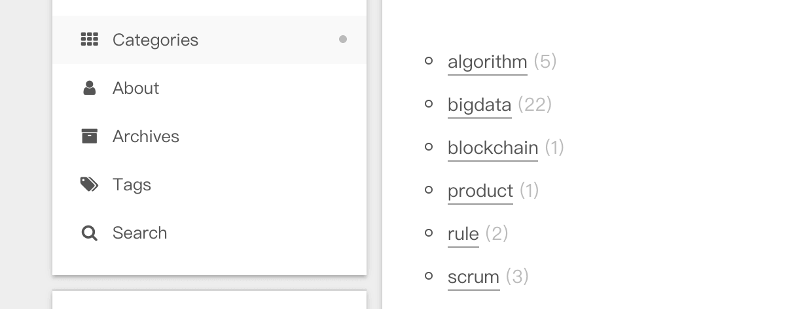
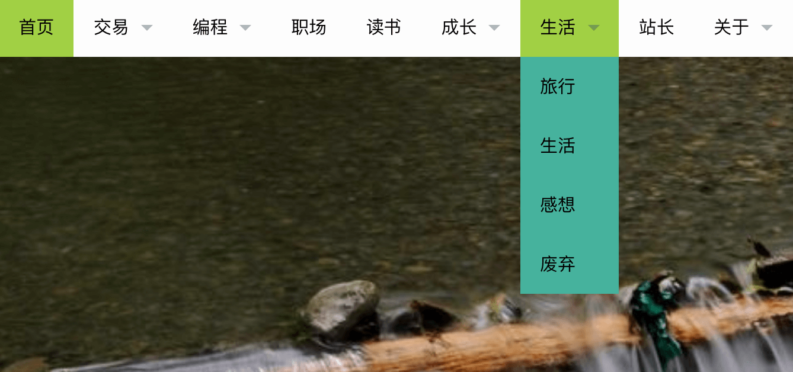
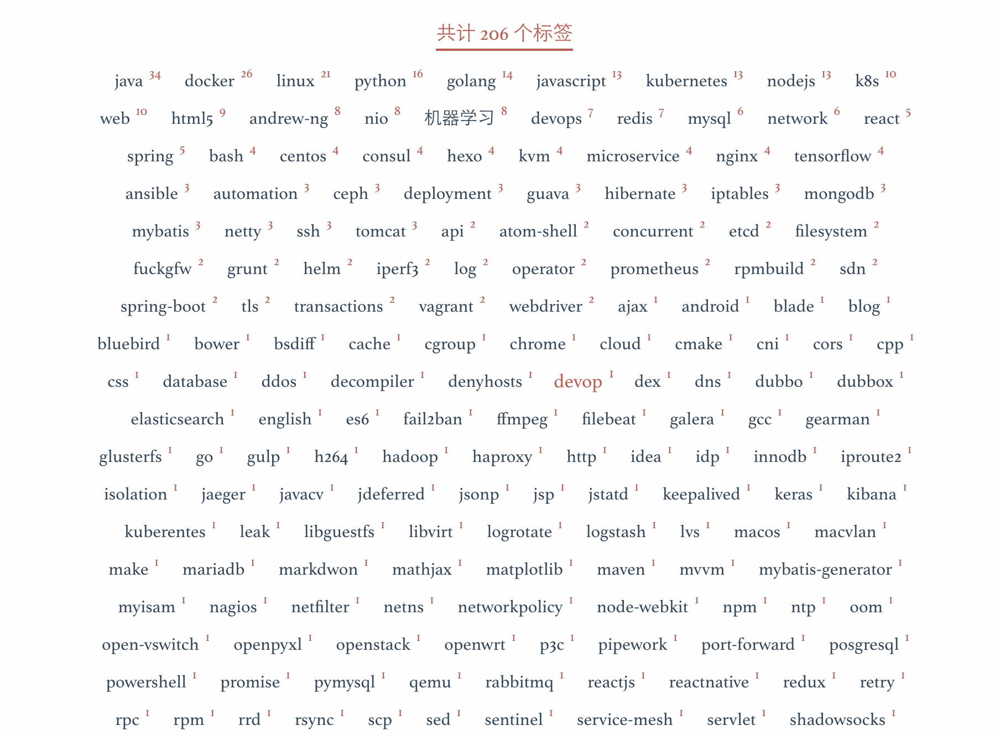
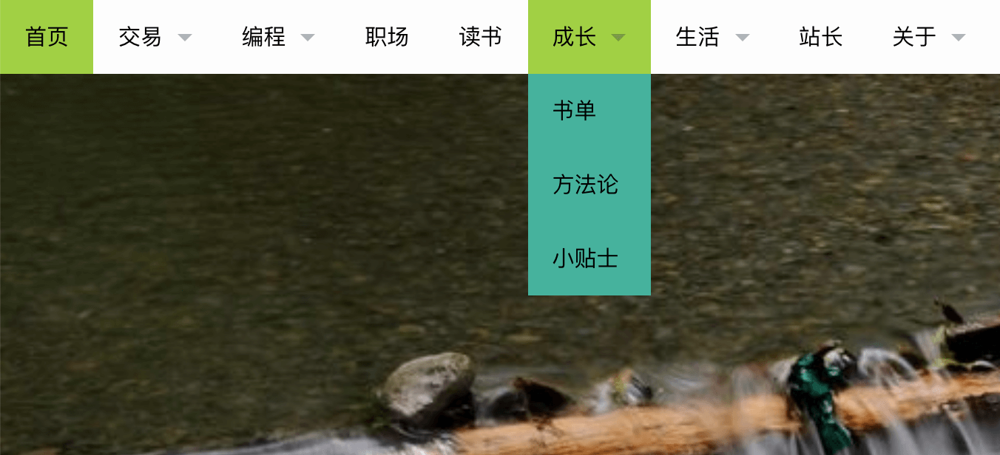

长期坚持博客写作是有正向收益的。博客，作为一种互联网时代下的新媒体，其存在的不仅仅是作为博主个人的书斋，更是一种传媒和社交渠道。那么，如何维持一个优质的博客？
我从大二开始尝试写博客。一开始使用 wordpress 建站，部署在阿里云主机上由自己维护。当时还只是个刚接触计算机的 萌新 ，对专业知识知识知之甚少，这时候对行业领域的知识并未形成体系，掌握的信息太过破碎。因此写的博文也大多是零碎的、不成体系的，甚至可以称之 毫无价值 的存在。过了一年，服务器的租用时间到期了，我将博客数据简单地备份了一下便草草了事。
大三时候，由于常常接触前端，了解到 Hexo + Github pages 的博客搭建方式。这种建站方式不仅仅满足了程序猿的 Geek 感，而且不需要花钱租用服务器，因而大受喜爱。我也跟风建了一个，当时捣鼓配置和主题还是费了不少时间，不过总算是又有个写字的地方了。大三下因考研停止了一段时间，而后在大四时换笔记本电脑忘记将博客源码备份（Hexo 部署时推送到 github 上是源码编译后的文件，这些文件即原博客项目中的 public 目录，当时没有意识到这一点，以为在 github 上是存在备份的）。
再之后，短暂地尝试过在简书上写文章，但是质量又太低（\捂脸），毕竟在上边写感觉像是在公共场所中发表一样，不是自己的地盘写点糙东西有点羞耻。另外，这种第三方独立的博文或者写作平台还是有几个问题需要考虑的，这点后续会提到。
总之，几乎每隔个一年半载的，博文写作这件事就 “叒” 提上日程，但是截止目前我还是没能坚持并践行好这件事情。不知道你是否也有同样的问题？如果有，并且你现在还在为 “不知如何才能坚持写好博客” 这件事犯愁，那么希望接下来的内容对你有所帮助。
Pre - 博客写作的必要性
我们假设你对坚持写博客这件事的意义有比较充分的理解。
以下是总结自： 为什么你应该（从现在开始就）写博客 一文。
- 交到志同道合的朋友
- 书写是为了更好地思考
- “教”是最好的学习方式
- 讨论有利于更好的反思
- 激励你持续去做好事情
- 长期有价值的博客是最好的名片
以下是补充：
- 记录并常回顾你的思想有助于保持”知行合一“
- 你的价值不在于你获得什么，而在于你创造并且留下什么
- 博客不仅仅降低你重新组织信息的成本，更是帮助其他人了解你的重要渠道
Why - 你真的需要独立博客吗？
在开始写博客前，我认为应当先按Why => How => What 的顺序分析博文写作这件事。
首先是 Why 。你为何要开始写博客？其实这相当于问你，你想从写博客这件事中得到什么收益。
不同的目的，需要不同的方法来实现。
有些人写博客是为了随手记录，当日志一样的存在，平时吐吐槽，或是在特殊的时刻深沉感慨一番；有些人可能是为了整理信息，帮助自己构建知识内容库，这类博客的内容可能大多数是非原创（内容以转载、再加工等形式为主）；而有的可能是为了分享观点，将自己一段时间里的思考做一个记录和总结，传播自己的思考见解。
第一类博客就像 “朋友圈” 一样，你想怎么写随意，撒欢儿写都行（只要你认为内容适合发表在公众领域中）；
第二类博客就像 “收纳箱” 一样，你需要根据文章进行分类打标签，组织好整体结构，方便日后查阅；
第三类博客则就相较为严肃，可以是某个冥思苦想后的感悟，也可以是针对某个技术问题进行较为深入的讨论，需细致打磨方好摆上台面。
如果只是上述三类其一，那么就放手去做好了。但是往往我们的博客承载的不仅仅是三者其一的功能，经常是兼具吐槽地盘和深沉思考的功能，套句话说那便是 “既要严肃，又要活泼”[2] 。要做到严肃和活泼两者兼具，需要一些 技巧。否则，试想一下你在十来篇“吐槽式”的文章中蹦出一篇严肃的思考总结，想想出现这种情况总有点不合时宜（有没有那么点…分裂的感觉）。🤔
另外提一句，用于做知识整理的话，其实使用如 印象笔记 等工具会来得更加的方便和专业，但是那些工具自带的 私有地盘 属性又和共享分享这一精神冲突（有些博主整理资料不仅仅是为了方便自己查阅，也是为了共享给他人用。这种利他行为往往也是利己的，是值得提倡的）。
总之，如果你没定位好自己博客的用途，你就没办法选择合适的方式来建设它。而当你弄清楚自己想要建一个什么样的博客后，如果它的定位比较简单，是单向的用途，那么我建议还是选择其它替代品比较合适，如第一类你可以直接用微信朋友圈，或者找相应圈子的软件（知乎豆瓣微博）；第二类使用专业的整理软件也是很好的（印象笔记、有道协作等）。当然你非要使用博客这种形式也未尝不可，只要根据搭建教程去做就成。
但事情往往没有那么简单，你还是希望有个 自留地 ，用以承载另一面自己。想象一下就如同有块后花园，你可能并不想都种上花卉，可能会锄块地种种萝卜青菜，也可能会再摆上桌椅板凳，偶尔同过路人闲聊几句，又或呼朋唤友促膝长谈。总之，你的花园如果想承载更多的功能，那么不得不进行一番规划和改造。博客也是如此。
How - 如何构建恰如其分的博客？
在这里我们讨论的是自建站型的博客，即不使用第三方博客平台。这个选择可以确保你对博客网站的结构有较强的掌控力，可以根据需要调整站点结构。无论你使用的是 wordpress 还是 Hexo 建站，都是采用类别(category)与标签(tags)来进行整理文章。
这就遇到了第一个问题： 如何更好地使用类别(category) 和 标签(tags) 来对文章进行整理归纳？
如果你曾写过一段时间的博客，你就会发现在一开始划分类别时或者新建标签时如果没有经过规划，那么文章一多这两种归纳手段的效率就会大大降低。
博客结构指南
分类问题
在 Hexo 的 Next 主题下，通常的菜单栏如下图所示，类别(category) 是作为菜单栏中的一个栏目存在，在类别这一栏目下你可以根据需要创建不同的类目。

图片来源: 博客-聚沙成塔
而你若采用 Wordpress 建站，你得到的菜单栏则大多数是这样的，类别和菜单栏目混为一谈，每个分类即是菜单栏上的一个栏目，每个栏目下可以有多个类别。

图片来源: 3DGods
类别的使用问题通常是，如果你一开始没有较好的规划划分好各类文章的分类依据，随着文章越来越多，有些文章甚至不知道放在哪只好建一个 未归档 或者 杂项 之类的类别来存放那些你难以分类的文章。如上边使用 Hexo 方式建站的博客，如果作为纯面向技术的博客（之前所述的第二类）是不错的规划方式。但是如果有些文章就是随性写，或者内容并非是技术向的，虽说放在一块未尝不可，但是如果能够像上边那个使用 Wordpress 博客所规划的那种方式岂不更好？当然，上图采用 Wordpress 博客的归类方式也是存在问题的，主要是类的划分非正交，不同类别之间还是存在共同交界处。此外，这个博客的类别数量较多。
标签问题
在标签的使用上，大多数博客框架或者第三方博客平台则较为一致，功能定位和使用方式都基本一致。
但是使用标签时如果不注意，可能会存在一个问题就是，随着文章越来越多，你的标签云出现了 大爆炸 的情况，标签数目让读者眼花缭乱（当然下面的例子是比较特殊的，通常没有这么夸张，但这个问题还是有存在）。

图片来源: jeremy 的技术点滴
结构规划
关于分类和标签的异同点和各自的使用方式在此就不赘述，可以参考这篇文章: 如何规划 blog 的标签（tag）和分类
| 分类 | 标签 | |
|---|---|---|
| 排他性 | 是 | 否 |
| 关系 | 从属 | 关联 |
| 创建 | 事先规划 | 随时增加 |
| 代价 | 高 | 低 |
我们注意到，相对于标签而言，分类的使用代价是比较高的，并且需要事先规划好，因此在开始搭建一个博客前做好类目的规划是非常有必要的。
这里给出分类时候的几个原则：
- 不同类目之间尽可能相互正交
- 分类数量不宜过多，一般 3 ～ 5 个左右最适宜
- 各类目划分层次尽可能相同
关于第一点，主要是为了防止出现文章归类不明问题，如下图中的 “职场” 和 “成长”、“读书” 与 “书单”。这样的分类在自己看来可能挺符合自己对文章的分类方式，但是其他人看到可能会小小地困惑一下。

图片来源: 3DGods
另外也有坑出现这样的情况：如某文章即探讨了网络技术在大数据时代下新技术演进方向。那么这篇文章是归类到 “网络技术” 还是 “大数据” ？其实这严格上来说应该是看文章主题落足于哪个点上。显然这里谈论的是网络技术的演进方向，大数据时代是作为一个背景，因此归档的时候应放到 “网络技术” 目录下。如果真的出现那种你难以分类的文章，并且你的分类规划也没有什么问题，那么是时候想想这篇文章是否构思时候就有“立意不明”的问题。
关于第二点，主要有两个蕴涵，一是人一次性接收的信息量差不多就是 3～5 个词汇，更多的分类造成的是信息归纳负担，会使得分类丧失带来的那种 “一目了然”；二是如果你所想耕耘的领域无法用 3 到 5 个词汇来概括，你应该反思一下你专注力是否太过分散了。专注在一个领域中深耕，在三个左右的邻域中播种，是相对合适的。
关于第三点，其实举个直观的例子就是： Python 和 机器学习 这两个类并存。其实这样分类也不是不可以，但是两个类所处的结构层次不太相同， Python 是一门编程语言，它应用领域非常多（包括在机器学习中也常常使用 Python作为编程语言），将它跟 机器学习 并列不太合适。它更适合以标签的形式存在使用。
标签相对来说使用起来就可以随性，它可以随时增加，随意组合，非常灵活。这里也给出几点建议：
- 每篇文章的标签尽可能在 3 个左右
- 可以固定几个维度来打标签
- 新标签尽量保持共通性强、复用可能性大
What - 博客于静默处讲述着什么？
这部分待我实践后来补充～
将要讨论的问题：
- 在哪里写作 => 维护成本如何？后续的如何备份？
- 为什么无法长期坚持下去 => 文章质量不高、无法坚持做的原因
- 要写什么样的博文 => 如何意识到博文的意义
- 可以不说真话，但不要说假话 => 真诚的重要性
- 于改进中成长 => 不要指望一开始就能做多好，不要低估成长的力量
参考资料
[4] 博客-聚沙成塔
[5] 3DGods
[6] jeremy 的技术点滴